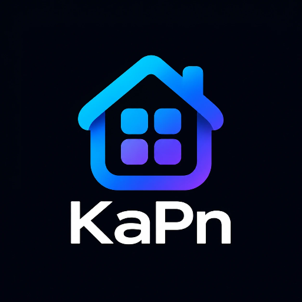

KaPnTVPrivacy Policy
Effective 20 November 2026
Summary
- KaPnTV is a home-screen launcher that runs on your Android TV or Google TV.
- There is no KaPnTV account or server. The developer never receives your data.
- Everything KaPnTV keeps is stored on your TV. Online requests go straight from your TV to the services listed below.
- KaPnTV has no ads, analytics or tracking, and never sells or shares your data.
Information on your TV
To work as a home screen, KaPnTV reads the following on your TV. It stays on your TV.
- Installed apps, to show and open them.
- Android TV channels and "Watch Next" that your apps publish, to show their previews and Continue watching.
- What's playing (title, artist and artwork from apps' media controls), only if you allow notification access. If "Remember what played on this TV" is on, a short history is kept on the TV. You can turn this off and clear it in Settings ▸ Now playing.
- Recently used apps and data used today, only if you allow Usage access, for Recent apps and the top bar.
- Network, Wi-Fi signal, Bluetooth and USB status for the top bar.
- Your settings: layout, rows, theme, backgrounds and icons. If you set a PIN, only a salted hash of it is stored. Backups you export are files on your TV and leave out your PIN and guest Wi-Fi password.
YouTube and Google user data
Connecting YouTube is optional. If you do it in Settings ▸ Accounts ▸ YouTube, you sign in
with Google using a code shown on the TV, and KaPnTV asks for one permission:
view your YouTube account (read-only, scope
youtube.readonly). KaPnTV cannot change anything in your account.
What KaPnTV reads
- Your YouTube channel name, to show which account is connected.
- The list of channels you subscribe to.
- Your liked videos: titles, channel names, thumbnails, durations and video IDs.
- The public feed of each subscribed channel's latest uploads, from youtube.com.
How it is used
Only to show Latest from your subscriptions and Liked videos on your TV's home screen and to open those videos in the YouTube app. It is not used for advertising, profiling, or training any model, and no person reads it.
Storage, sharing and deletion
- The sign-in tokens are encrypted with a key held in the Android Keystore on your TV.
- The rows are cached in KaPnTV's private storage on your TV and refreshed while you are connected.
- Your Google user data is not sent to the developer or to anyone else, and is never sold, shared or transferred.
- Disconnect in Settings ▸ Accounts ▸ YouTube deletes the tokens and cached rows from your TV and revokes KaPnTV's access with Google. Clearing KaPnTV's data or uninstalling it also deletes everything. You can also remove access at any time at myaccount.google.com/permissions.
KaPnTV's use and transfer of information received from Google APIs adheres to the Google API Services User Data Policy, including the Limited Use requirements.
KaPnTV uses YouTube API Services. By connecting YouTube you agree to the YouTube Terms of Service, and Google's handling of your data is covered by the Google Privacy Policy.
Other online services
These requests go directly from your TV to each service. None of them need a KaPnTV account.
- Open-Meteo (weather): the place name you search for in Settings, then that place's coordinates. See Open-Meteo's terms.
- TMDB (film and series artwork and details): title IDs and your TV's language. This product uses the TMDB API but is not endorsed or certified by TMDB. See TMDB's privacy policy.
- Trakt (optional, only if you connect it): reads your playback progress, watch history, watchlist and recommendations to show them on your TV. Tokens are encrypted on the TV and revoked when you disconnect. See Trakt's privacy policy.
- Artwork: images are downloaded from the addresses that your apps and these services provide.
Children
KaPnTV is not directed at children under 13 and does not knowingly collect personal information from them.
Changes and contact
If this policy changes, the new version will be posted on this page with a new effective date. Questions? Open an issue at github.com/KaPnDJ/KaPnTV/issues.